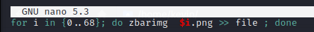

flag4
cuatro:p3dr00l1v4r3zA hint to next flag
Lets visit :
http://192.168.1.19/justanothergallery/Since it's about 69 images so we download it locally first
So we created bash file for same
Then on running we got all the qr files Now it's time to use
zbarimg to read them all. One again let's make a bash script

Now lets grep file with cinco as it's our next user